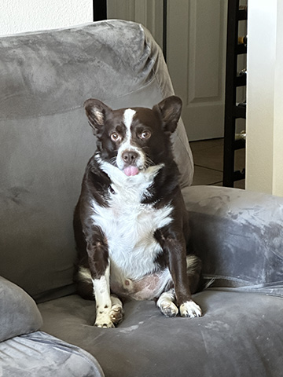
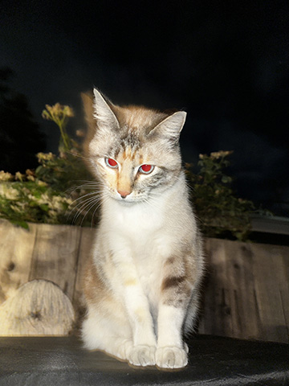

Lucas is an artist born in El Salvador and moved to the US as a little kid.
He has been drawing since he was 12 years old with the goal of one day becoming a professional illustrator
or animator for a big company. He has his AA in animation and is currently working to get his
bachelors in visual communications.
He is trying to get experience in graphic design in hopes that he goes into working in the animation industry
with many roles sounding intriguing. Some positions he would like to work as are key animator, storyboarding,
background artist, character designer, prop designer, illustrator, and concept art. In a perfect world,
Lucas will have the chance to try multiple positions that allow him more stability in the industry.
He likes to draw characters from his favorite shows and animals that are cute.
Some of his favorite series include Berserk, JJBA and Breaking Bad. His favorite movie is Whiplash.
Some hobbies he enjoys are rock climbing, running and doom scrolling on TikTok.
His highest grade of climbing is v4s and likes to do bouldering, especially on the slab wall. He is known to be afraid of
heights, he really needs to think about the hobbies that he chooses...
He has completed a couple of 5ks, 10ks and is planning to run a half marathon by the end of the year!
One goal he has for the year is to make it into more art vendor events so that he can sell his stickers and prints.
Maybe even reach some of the bigger conventions like AX or SacAnime to reach a bigger audience and get his name out in the area.
With that being said, reach out to him to support a local artist!
He has a cat named Michi (pictured on the right) and a dog named Milo (pictured on the left) that he loves
very much.
Make sure to check out the portfolio page with some of his favorite works on display and hope you enjoy the site!